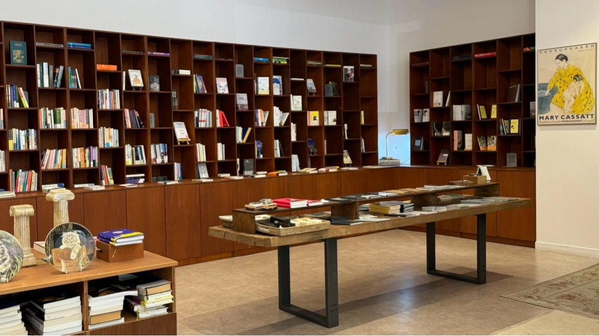
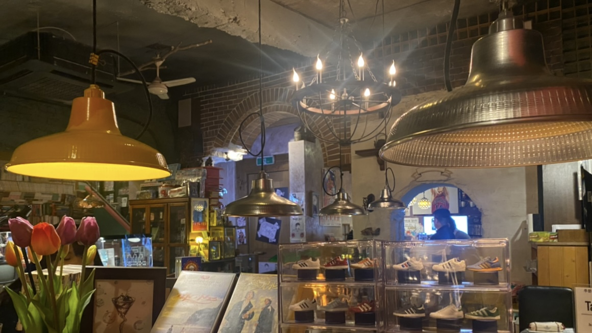

실내 공간/장식
눈길이 간 실내 공간과 장식들
카페 안 책장
카페에 갔다가 본 실내 공간이다. 카페 한편에 서점처럼 수많은 책들이 있는 인테리어를 처음 봤다. 카페를 단순히 커피와 후식을 먹는 공간이라고 생각할 수 있다. 그런데 여기는 카페에 앉아서 책과 함께 할 수 있는 공간을 생각한 디자인이라고 느꼈다. 그리고 사진에 보이는 액자뿐만 아니라 곳곳에 여러 가지 액자들도 걸려있어 눈이 즐거워지는 공간이었다.
앤티크 한 장식들
친구와 주점을 갔을 때 본 공간이다. 이곳의 실내는 전체적으로 앤티크한 장식들로 이루어져 있었다. 요즘 실내 디자인의 추세는 물건을 최소화한 방식이다. 그런데 이곳처럼 물건과 장식이 많은 곳에 흥미를 느꼈다. 그리고 구석구석 놓인 소품들과 공간을 구경하는 재미도 느낄 수 있어서 좋았다.